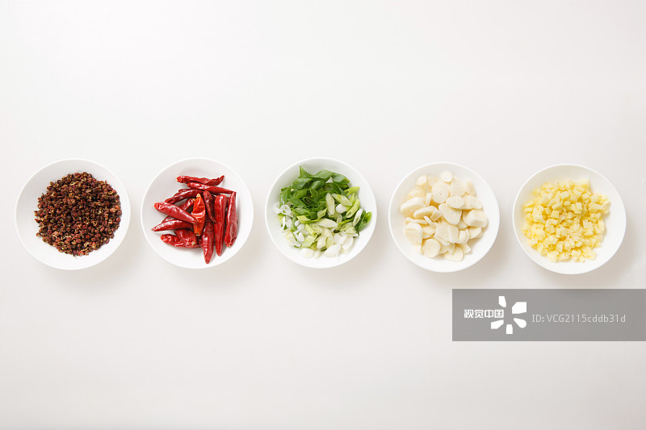
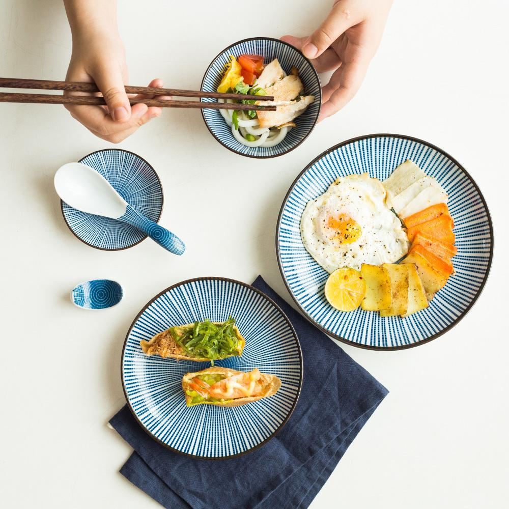

中餐味道

中餐

中餐（Chinese cuisine），即指中国风味的餐食。其中有粤菜、川菜、鲁菜、淮扬菜、浙菜、闽菜、湘菜、徽菜、东北菜、冀菜、豫菜、鄂菜、本帮菜、客家菜、赣菜、京菜、清真菜等菜系”。
菜品特点：1.在选料上，由于我国多数人在饮食上受宗教的禁忌约束较少，而人们在饮食上又喜欢猎奇，讲究物以稀为贵，所以中餐的选料非常广泛，几乎是飞、潜、动、植，无所不食。
2.原料加工上，中餐厨师非常讲究刀工，可以把原料加工成细小的丝、丁、片、末等刀口。
3.烹调上,中餐做菜一般使用的圆底锅、明火灶非常适宜炒菜，所以中餐炒的烹调方法非常多。
4.口味上，中餐菜肴大都有明显的咸味，并富于变化，多数菜肴都是完全熟后再食用。
5.主食上,中餐有明确的主、副食概念，主食有米、面等多种制品。煎
煎饺
煎饺
是指用放点油不用水慢慢在锅里把食物煎熟。
一般日常所说的煎，是指用锅子把少量的油加热，再把食物放进去，使其熟透。表面会稍成金黄色乃至微煳。由于加热后，煮食油的温度比用水煮的温度为高，因此煎食物的时间往往需时较短。煎出来的食物味道也会比水煮的甘香可口。例如煎饺、煎豆腐、韭菜盒子、煎饼、铜锣烧等。
焖与煮
焖煮都差不多两者都是把食物稍微炒下然后放水去焖煮直到熟透有一点点水就可以了。
蒸
粉蒸肉
粉蒸肉
指把经过调味后的食品原料放在器皿中，再置入蒸笼利用蒸汽使其成熟的过程。可分为猛火蒸，中火蒸和慢火蒸三种。例如粉蒸肉、清蒸螃蟹、清蒸武昌鱼、蒸水蛋等。
炒
炒
炒
炒是最广泛使用的一种烹调方法，它主要是以油为主要导热体，将小型原料用中旺火在较短时间内加热成熟、调味成菜的一种烹调方法。例如番茄炒蛋、宫保鸡丁、醋溜白菜、辣子鸡等。
餐桌礼仪

中华饮食，源远流长。在讲究礼仪、讲究民以食为天的国度里，饮食礼仪自然成为饮食文化的一个重要部分。
随着中西方饮食文化的不断交流，中餐越来越受到外国人的青睐。
中餐的饮宴礼仪号称始于周公，千百年的演进，当然不会再有“孟光接了梁鸿案”那样的日子，但也还是终于形成大家普遍接受的一套饮食进餐礼仪，是古代饮食礼制的继承和发展。中餐饮食礼仪因宴席的性质，目的而不同；不同的地区，也是千差万别。
中餐的餐具主要有杯、盘、碗、碟、筷、匙六种。在正式的宴会上，水杯放在菜盘左上方，酒杯放在右上方。筷子与汤匙可放在专用的座子上，或放在纸套中。公用的筷子和汤匙最好放在专用的座子上。
中餐上菜的顺序一般是：先上冷盘，后上热菜，最后上甜食和水果。用餐前，服务员为每人送上的第一道湿毛巾是擦手用的，最好不要用它去擦脸。在上虾、蟹、鸡等菜肴前，服务员会送上一只小小水盂，其中漂着片柠檬片或玫瑰花瓣，它不是饮料，而是洗手用的。洗手时，可两手轮流蘸湿指头，轻轻涮洗，然后用小毛巾擦干。
[1]
礼仪规则
1、请客要早通知，6：00入席，5：50才叫客人来，不合适。
2、主人家不能迟到；客人应当早到5－10分钟，这是非常体贴的客人哦，注意掌握，自然宾主皆欢。
3、要是坐圆桌子，对着大门的是主座，或是背靠墙、柜台的；讲究些的饭店，会用餐巾予以区分，餐巾最高大的位置不能随便坐哦，除非你打算好请客喽。
4、主人右手边的是主客，左手边的是次重要的客人；门边面对主人的，自然是跑腿招呼的陪客坐的啦。
5、做客人的不能直接向点菜员吆喝指点，应该乖乖坐等主人家点菜；如果客人确实有严重的忌口或爱好，应当轻轻告诉主人家，主人自然要替他做主，满足客人小小或大大的要求。
6、主人家，不点或少点需要用手抓或握着吃的菜，比如蟹、龙虾腿、排骨等等。一顿饭来上三个这样的菜就没治了。还有什么礼仪可讲。
7、不勉强也不反对别人少量饮酒，无酒不成宴嘛。